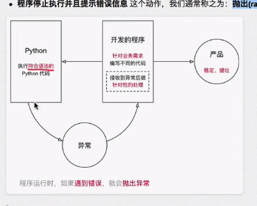

异常¶
目标¶
- 异常的概念
- 捕获异常
- 异常的传递
- 抛出异常
01. 异常的概念¶
- 程序在运行时，如果
Python 解释器遇到 到一个错误，会停止程序的执行，并且提示一些错误信息，这就是 异常 - 程序停止执行并且提示错误信息 这个动作，我们通常称之为：抛出(raise)异常 
程序开发时，很难将 所有的特殊情况 都处理的面面俱到，通过 异常捕获 可以针对突发事件做集中的处理，从而保证程序的 稳定性和健壮性
02. 捕获异常¶
2.1 简单的捕获异常语法¶
- 在程序开发中，如果 对某些代码的执行不能确定是否正确，可以增加
try(尝试)来 捕获异常 - 捕获异常最简单的语法格式：
try: 尝试执行的代码 except: 出现错误的处理
try尝试，下方编写要尝试代码，不确定是否能够正常执行的代码except如果不是，下方编写尝试失败的代码
简单异常捕获演练 —— 要求用户输入整数¶
try: # 提示用户输入一个数字 num = int(input("请输入数字：")) except: print("请输入正确的数字")
2.2 错误类型捕获¶
-
在程序执行时，可能会遇到 不同类型的异常，并且需要 针对不同类型的异常，做出不同的响应，这个时候，就需要捕获错误类型了
-
语法如下：
try: # 尝试执行的代码 pass except 错误类型1: # 针对错误类型1，对应的代码处理 pass except (错误类型2, 错误类型3): # 针对错误类型2 和 3，对应的代码处理 pass except Exception as result: print("未知错误 %s" % result)
- 当
Python解释器 抛出异常 时，最后一行错误信息的第一个单词，就是错误类型
异常类型捕获演练 —— 要求用户输入整数¶
需求
- 提示用户输入一个整数
- 使用
8除以用户输入的整数并且输出
try: num = int(input("请输入整数：")) result = 8 / num print(result) except ValueError: print("请输入正确的整数") except ZeroDivisionError: print("除 0 错误")
这里的ValueError等错误都是python执行时抛出的异常
捕获未知错误¶
- 在开发时，要预判到所有可能出现的错误，还是有一定难度的
- 如果希望程序 无论出现任何错误，都不会因为
Python解释器 抛出异常而被终止，可以再增加一个except
语法如下：
except Exception as result: print("未知错误 %s" % result)
2.3 异常捕获完整语法¶
- 在实际开发中，为了能够处理复杂的异常情况，完整的异常语法如下：
提示：
- 有关完整语法的应用场景，在后续学习中，**结合实际的案例**会更好理解
- 现在先对这个语法结构有个印象即可
try: # 尝试执行的代码 pass except 错误类型1: # 针对错误类型1，对应的代码处理 pass except 错误类型2: # 针对错误类型2，对应的代码处理 pass except (错误类型3, 错误类型4): # 针对错误类型3 和 4，对应的代码处理 pass except Exception as result: # 打印错误信息 print(result) else: # 没有异常才会执行的代码 pass finally: # 无论是否有异常，都会执行的代码 print("无论是否有异常，都会执行的代码")
else只有在没有异常时才会执行的代码-
finally无论是否有异常，都会执行的代码 -
之前一个演练的 完整捕获异常 的代码如下：
try: num = int(input("请输入整数：")) result = 8 / num print(result) except ValueError: print("请输入正确的整数") except ZeroDivisionError: print("除 0 错误") except Exception as result: print("未知错误 %s" % result) else: print("正常执行") finally: print("执行完成，但是不保证正确")
03. 异常的传递¶
- 异常的传递 —— 当 函数/方法 执行 出现异常，会 将异常传递 给 函数/方法 的 调用一方
- 如果 传递到主程序，仍然 没有异常处理，程序才会被终止
提示
- 在开发中，可以在主函数中增加 异常捕获
- 而在主函数中调用的其他函数，只要出现异常，都会传递到主函数的 异常捕获 中
- 这样就不需要在代码中，增加大量的 异常捕获，能够保证代码的整洁
需求
- 定义函数
demo1()提示用户输入一个整数并且返回 - 定义函数
demo2()调用demo1() - 在主程序中调用
demo2()
def demo1(): return int(input("请输入一个整数：")) def demo2(): return demo1() try: print(demo2()) except ValueError: print("请输入正确的整数") except Exception as result: print("未知错误 %s" % result)
04. 抛出 raise 异常¶
4.1 应用场景¶
- 在开发中，除了 代码执行出错
Python解释器会 抛出 异常之外 - 还可以根据 应用程序 特有的业务需求 主动抛出异常
示例
- 提示用户 输入密码，如果 长度少于 8，抛出 异常
注意
- 当前函数 只负责 提示用户输入密码，如果 密码长度不正确，需要其他的函数进行额外处理
- 因此可以 抛出异常，由其他需要处理的函数 捕获异常
4.2 抛出异常¶
Python中提供了一个Exception异常类- 在开发时，如果满足 特定业务需求时，希望 抛出异常，可以：
- 创建 一个
Exception的 对象 - 使用
raise关键字 抛出 异常对象
- 创建 一个
需求
- 定义
input_password函数，提示用户输入密码 - 如果用户输入长度 < 8，抛出异常
- 如果用户输入长度 >=8，返回输入的密码
def input_password(): # 1. 提示用户输入密码 pwd = input("请输入密码：") # 2. 判断密码长度，如果长度 >= 8，返回用户输入的密码 if len(pwd) >= 8: return pwd # 3. 密码长度不够，需要抛出异常 # 1> 创建异常对象 - 使用异常的错误信息字符串作为参数 ex = Exception("密码长度不够") # 2> 抛出异常对象 raise ex try: user_pwd = input_password() print(user_pwd) except Exception as result: print("发现错误：%s" % result)